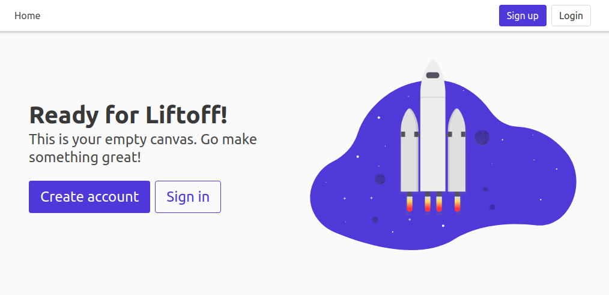

Getting Started#
Here’s everything you need to start your first Pegasus project.
Watch the video#
Visual learner? The above video should get you going. Else read on below for the play-by-play.
Create and download your project codebase#
If you haven’t already, you’ll need to purchase a Pegasus License on saaspegasus.com.
Then, create a new project on saaspegasus.com, following the prompts and filling in whatever configuration options you want to use for your new project. Make sure that the “license” field at the bottom is set.
Once you’re done, download your project’s source code as a zip file. Unzip it to a folder where you want to do your development and you’re ready to go!
Set up source control#
It is highly recommended to use git for source control. Install git and then run the following commands:
git init
git add .
git commit -am "initial project creation"
It is also recommended to create a pegasus branch at this time for future upgrades.
git branch pegasus
You can read more about upgrading here.
Get up and running with Docker#
If you’ve chosen to use Docker in development (the quickest and easiest way to get up and running), continue to the Docker instructions.
Then skip ahead to the post-install steps.
Get up and running with native Python#
Follow these instructions to run your application in your system’s Python. If you’re using Docker you can skip this section.
A video walkthrough of most of these steps is available here.
Install Prerequisites#
If you haven’t already, first install Python version 3.11.
On Mac and windows you can download Python 3.11 installers from here. On Ubuntu it’s recommended to use the deadsnakes repo.
Note: running on older Python versions may work, but 3.11 is what’s tested and supported.
If you’re using Postgres, you’ll also want to make sure you have it installed.
To use celery you will also need to install Redis.
Setup a Python 3.11 virtual environment#
See Using Virtual Environments for details on this process.
Enter the project directory#
cd {{ project_name }}
You should see a lot of newly created files for your project including a manage.py file.
Install package requirements#
pip install -r dev-requirements.txt
# for production installs use
pip install -r requirements.txt
Note: if you have issues installing psycopg2, try installing the dependencies outlined in
this thread
(specifically python3-dev and libpq-dev).
On Macs you may also need to follow the instructions from this thread. And specifically, run:
brew reinstall openssl
export LIBRARY_PATH=$LIBRARY_PATH:/usr/local/opt/openssl/lib/
Set up database (Postgres only)#
If you installed with Postgres, edit the DATABASES value in {{ project_name }}/settings.py with
the appropriate details.
You will also need to create a database for your project if you haven’t already:
sudo -u postgres createdb {{ project_name }}
Create database migrations#
python ./manage.py makemigrations
Run database migrations#
python ./manage.py migrate
Run server#
python ./manage.py runserver
Go to http://localhost:8000 and you should see the default Pegasus landing page.

Post-installation steps#
Once up and running, you’ll want to review these common next-steps.
Create a User#
To create your first user account, just go through the sign up flow in your web browser.
From there you should be able to access all built-in functionality and examples.
Enable admin access#
Use the promote_user_to_superuser management command
to enable access to the Django Admin site.
Confirm your site URL#
For Stripe callbacks, email links, and JavaScript API clients to work, you must make sure that you have configured absolute URLs correctly.
Set up your Stripe Subscriptions#
If you’ve installed with subscriptions, you’ll want to set things up next.
Head to the subscriptions documentation and follow the steps there!
Set up Background Tasks#
For the progress bar example to work—and to run background tasks of your own—you’ll need a Celery environment running.
Head to celery and follow the steps there!
Building Your Application#
At this point, Pegasus has installed scaffolding for all of the user management, authentication, and (optionally) team views and Stripe subscriptions, and given you a beautiful base UI template and clear code structure to work from.
Now that you’re up and running it’s time for the fun part: building your new application!
This can obviously be done however you like. Some examples of things you might want to do next include:
Customize your landing page and set up a pricing page
Start modifying the list of navigation tabs and logged-in user experience
Create a new django app and begin building out your data models in
models.py
For some initial pointers on where to to make Pegasus your own, head on over to the Customizations Page.
For the nitty-gritty details on setting up things like email, error logging, sign up flow, analytics, and more go to Settings and Configuration.